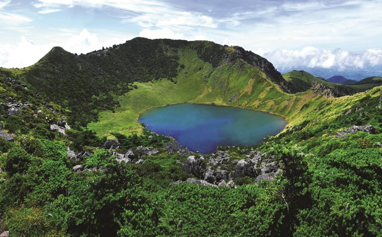

한라산 국립공원
🔸 소개
지리산, 북한의 금강산과 함께 한반도의 3대 영산에 속하는 한라산은 한반도의 최남단에 위치하고 있으며, 높이 해발 1,950m로 남한에서 가장 높다.
다양한 식생 분포를 이뤄 학술적 가치가 매우 높고 동식물의 보고로서, 1966년 10월 12일 천연기념물 제182호인 한라산천연보호구역으로 지정보호되고 있다. 1970년 3월 24일 국립공원으로 지정되었고, 2002년 12월에는 UNESCO 생물권 보전지역으로 지정되었다.
🔸주변 광광지
- 백록담
- 사라오름
- 삼각봉
- 수악 (물오름)